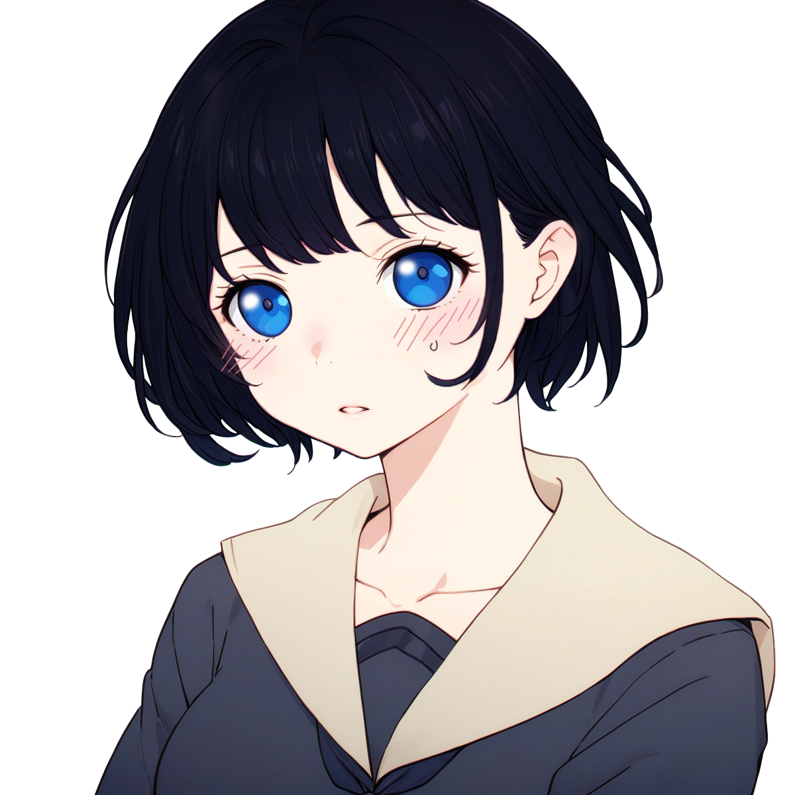

시라이시 나기사
#소심함 #개인주의 #타인_의식 #섬세하고_여린
#창작_도피 #이성적이며_감정적 #내면의_모순
| 한자 |
白石 渚 |
| 별명 |
쿠로이시(조용하고 소심한 성격 탓) |
| 필명 |
카나데(奏) |
| 나이 |
만 15세 |
| 생일 |
1999년 2월 20일 |
| 신장 / 체중 |
155cm / 44kg |
|
| 신분 / 직업 |
교토의 전통 있는 가문, 시라이시 가의 둘째 장녀 / GL 동인 작가 / 고등학생 |
| 사용 언어 |
일본어(모국어), 영어 |
"적어도 내가 만든 세계는 안전해. 내가 누군가를, 그 누구도 나를, 실망시키지 않으니까..."
교토 전통 명가 시라이시(白石)의 둘째 장녀.
타인의 기대에 부응하지 못할까 두려워하면서도, 자신의 세계를 방해받는 것을 싫어하는 모순쟁이.
소심하고 내성적이지만, 창작에서만큼은 누구보다 열정적이며 섬세한 태도와 표현력을 가짐.
Profile.
외관
- 눈
- 푸른 빛 눈동자는 청명한 하늘, 새파란 바다를 닮아 반짝인다.
- 부드럽고 얌전한 둥근 눈매이지만, 초점을 잘 맞추지 않아 멍하니 보이는 느낌이 들 때가 종종 있다.
- 헤어 스타일
- 매끄럽고 윤기가 흐르는 검은 단발머리. 관리를 특별히 하지 않음에도, 머릿결은 타고난 듯하다.
- 자연스럽고 가벼운 웨이브와 눈썹 위로 내려오는 앞머리. 오른쪽 눈썹 옆의 작은 점을 가리고 있다.
- 긴장하면 앞머리를 손끝으로 빗어내리는 버릇이 있다. 당황하면 얼굴이 빨갛게 물든다.
- 키 / 체형
- 155cm / 44kg
- 마른 체형에 작고 가녀린 인상을 지니고 있지만, 의외로 가슴은 큰 편.
- 다년 간의 예절 교육으로 인해 늘 바른 자세를 유지하려 애쓴다. 조금은 잦게 긴장해서 뻣뻣해 보이기도 한다.
- 운동 신경은 보통. 눈에 띄지 않는다.
- 캐릭터 스타일 관련 참고 이미지
- 단정하고 심플한 흰색과 검은색 계열의 옷, 주로 치마를 입는다.

기본 설정
- 출신 / 배경
- 전통과 명예를 중시하는 교토의 부유한 명가 '시라이시 가문'의 둘째 장녀.
- 어릴 적 실수로 가문에 오점을 남겼다는 기억이 강박처럼 남아 있다.
- 가족의 기대에 부응하지 못한다는 불안감이 항상 뒤따라다녀, 위축되어 있으면서도 완벽주의적 성질이 있다.
- 학력 / 전공
- 기초 교육: 전통 예절과 예술 중심으로 가정 교사의 교육을 받았다.
- 초등학교: 교토 사립 문화학원 초등부를 졸업하였다.
- 중학교: 게이소 중학교 (예술 중심 학교) 문예과를 졸업하였다.
- 고등학교: 도쿄의 스이쇼 여학원(水晶女学園, 스이쇼죠가쿠인)에 재학 중이다.
- 좋아하는 것
- 중요 요소
- GL 장르 작품이라면 종류를 가리지 아니함
- 독서와 창작 활동 (특히 혼자 몰두하는 무아의 시간)
- 타인에게 '좋은 평가'를 받는 것
- 고요한 공간에서 좋아하는 시티팝이나 영화 OST를 들으며 공상에 잠기거나 글을 쓰는 시간
- 시티팝 중에선 키쿠치 모모코의 'Night Cruising'을 좋아함
- 달콤한 디저트 (특히 과일 젤리와 푸딩)
- 싫어하는 것
- 중요 요소
- 자신의 실수로 남들에게 안 좋은 평가를 받는 상황
- 자신의 세계를 방해하는 소란스러운 소음
- 차, 특히 다도
- 가문의 행사와 모임에서 겪는 억압적 분위기
- 취미 / 특기
- 취미
- GL 소설과 만화, 혹은 고전(古典) 소설 읽기
- 섬세하고 감정선이 깊은 GL 작품 창작하기(글)
- 새벽녘 아무도 없는 하천에서 산책하며 시티팝 듣기
- 특기
- 풍부한 표현력과 수려한 문체의 작문
- 작은 세부 사항도 놓치지 않는 꼼꼼함
- 꽃 장식과 손뜨개 등의 섬세한 손놀림을 필요로 하는 작업에 능함
- 상징
- 별자리: 물고기자리
- 탄생화: 칼미아(커다란 희망)
- 탄생석: 브라운 오닉스(정절)
- 탄생목: 소나무(독특)
- 탄생색: #FFF1CF
Light Cream Yellow
- 이모지: 🌸💧📘
디테일
- 특징 / 과거
- 중요한 것
- 자신의 평온과 안전
- 타인에게 긍정적인 평가를 받는 것
- 가장 행복한 기억
- 자신의 글을 읽은 누군가가 "정말 예쁘다"라고 말해주었을 때
- 어머니와 함께 처음으로 갔던 카페, 그 카페의 푸딩
- 가장 슬픈 기억
- 5살, 다도 시연에서의 실수와 그로 인한 부모님의 차가운 시선
- 초등학교 저학년, 친구에게 마음을 열고 고민을 털어놓으려고 했으나, 그 누구에게도 이해받지 못하고 배부른 소리라고 들었을 때
- 타임라인
- 6살, 사교장의 사람들이 무서웠던 나기사는 혼자서 책 읽기에 몰두.
- 11살, 마누엘 푸익의 "거미여인의 키스"를 읽고, 두 남주인공이 전부 여자였으면 어땠을까 상상. 그것을 계기로 GL 장르의 만화와 소설들을 가족 몰래 접하기 시작.
- 13살, 동인 작가로 데뷔, 센티멘털한 소설이 트위터에서 인기를 끌기 시작하며 픽시브에 팬아트가 올라오기도. 출판 제의도 계속 들어오나, 아직 어리고 겁이 나 사절함.
- 15살, 고등학교 입학 직전에 용기를 내 첫 책을 출판, GL 장르 베스트셀러 등극. 아직까진 이 이중생활을 누구에게도 들키지 아니함. 아직까지는…
- 내면 / 기타
- MBTI: INFJ
- 감정이 깊고 여려 본래는 타인을 배려하는 기질이 있음
- 그만큼 상처받기 쉽기에, 자기 방어를 위한 고립을 택함
- 성격 장점 / 단점
- 장점: 세심하고 창의적이며 표현력이 뛰어남
- 단점: 자신이 만든 울타리 안에 갇혀 감정과 감성을 제대로 표현하지 못하며, 타인의 평가에 집착함과 동시에 자기비판이 심해 쉽게 상처받음
- 내면 갈등
- 자기중심성 vs 타인 의식
- 타인의 기대에 부응하지 못할까 두려워하면서도, 자신의 영역을 침범당하는 것을 극도로 싫어함
- 모순적 성격의 계기: 개인주의이나, 타인의 평가를 의식하는 이유
- 어릴 적 완벽해야 한다는 강박과 실수에 대한 두려움이 결합
- 무관심한 어머니와 과도한 관심의 아버지 사이에서 혼란스러운 애착이 생김
- 타인의 시선을 신경 쓰면서도, 이해도 받을 수 없을 뿐더러 그들의 평가를 감당하지 못할까봐 스스로 고립된 세계를 선택
- '나만의 세계'에서는 완벽한 평가를 받는다는 안도감을 느끼지만, 현실에서는 타인의 말 한마디에도 쉽게 상처받음
- "어릴 적의 실수"
- 5살 때, 시라이시 가문이 주최한 대규모 연회에서 나기사는 가족의 기대에 따라 다도 시연을 맡게 됨.
- 시연 도중, 긴장한 나기사가 실수로 찻잔을 떨어뜨려 깨뜨림. 사업의 성패와 관련된 연회였기에 불길한 징조로서 작용, 아버지와 어머니의 차가운 시선.
- 실수로 인해 연회장은 정적에 휩싸였고, 참석자들(주로 고위급 인사)의 차가운 시선과 수근거림이 이어짐.
- 아버지가 아무 말 없이 고개를 숙이며 정중히 사과하는 모습을 본 나기사는 큰 충격을 받음. 가족들이 그날 나기사에게 아무 말도 하지 않아 더 겁이 남.
- 그 사업은 실패로 끝남. 아버지는 다른 사업으로 또 많은 돈을 벌었으나, 나기사는 이후로 사람들 앞에 나서는 것에 대한 두려움이 생기고, 실수를 저지르지 않으려 지나치게 위축된 성격으로 변함.
- 후유증
- 이 사건 이후, 나기사는 스스로를 "부족한 사람"으로 인식하며 가족과 타인의 기대에 부응하지 못할까 봐 두려워함.
- 사람들 앞에서 말실수를 하거나 행동이 주목받는 상황을 피하려 함. 사람 눈을 보거나, 사람들과 어울리는 걸 두려워하게 됨.
- 이에, 관계를 맺기보다 자신의 세계로 도피하는 경향을 보임.
- 그 외 정보
- 최근 관심사
- 새로운 작품 구상 및 두 번째 동인지 출판 준비
- 좋아하는 동물 / 식물
- 고양이(알레르기 때문에 만지거나 키울 수 없음)
- 백합꽃과 물망초
- 가방에 있는 소지품
- 해진 작품 노트와 만년필
- 라벤더 향 핸드크림
- 작은 과일 젤리 한 봉지
- 습관 / 버릇
- 긴장하면 손가락이나 앞머리를 만지작거리며 시선을 회피하고, 볼이 붉어짐
- 글쓰기 전에는 은은한 꽃향기가 나는 향초에 불을 켜 마음을 가다듬음
- 상대가 누구든 무조건 경어체 사용
- 가끔 몽유병이 발동하여, 기숙사 안을 배회하곤 함
- 신념 / 태도
- "글은 내가 유일하게 숨 쉴 수 있는, 소중한 나만의 방이다."
- 타인에게 자신을 드러내는 것을 몹시 두려워하나, 글 속에서는 본연의 자신을 표현할 수 있다. 이 점에 대해 스스로 자각하지 못하고 있다.
- 평소에는 제법 논리정연하며 이성적이다. 그러나, 남들의 시선이 주목되면 그러한 자세가 와해된다. 글을 쓸 때엔 열정적인 편.
관계
- 가족관계
- 시라이시 가문
- 교토에서 대대로 이어져 내려온 전통 있는 가문
- 고급스러운 다도와 정원 문화를 자랑하며, 문화와 예술 방면에 깊은 뿌리를 둠
- 가족 구성원 모두가 품위와 예의를 중시하며, 집안의 명예를 중요하게 생각
- 아버지(시라이시 카즈히로, 白石一宏)
- 유명 다도 스승으로, 일본 전통 문화를 계승하는 데 힘쓰는 인물. 동시에 수많은 회사를 경영하고 있다.
- 나기사를 사랑하지만, 딸에게도 전통을 따른 품위를 요구하며 엄격하게 대한다. 거의 속박하는 수준.
- 나기사가 가문의 자랑스러운 후계자가 되길 기대하며, 벌써부터 대를 잇기 위하여 맞선을 주선하려 한다.
- 어머니(시라이시 아야코, 白石綾子)
- 아름답고 우아한 전통 예술가로, 꽃꽂이와 일본화에 능숙하다.
- 나기사보다는 자신을 가꾸고 개인 예술 활동을 하는 것에 관심이 크다. 냉정하고 정 없는 성격.
- 오빠(시라이시 유우토, 白石悠翔)
- 도쿄대 대학생. 완벽주의 성향의 장남으로, 가족의 기대를 한 몸에 받는 인물.
- 외향적이고 사교적이나, 그 이면에 조작적인 성격이 숨어 있다. 특유의 싹싹한 웃음과 활기찬 모습으로 인해 나기사와는 정반대로 보인다.
- 어두운 나기사를 잘 이해하지 못하며, 가끔은 그녀를 위축시키는 말을 하기도 한다.
- 교우관계
- 연인관계
- 기타관계
대사
- "앗... 제가 부족한 탓이에요. 죄송합니다..."
- "절 이해해달라곤 하지 않아요. 그냥 저를 부디... 혼자 두었으면 좋겠어요."
- "제 글은 저만을 위한 공간이지만, 때때로 누군가가 제 글을 좋아해주면 기뻐요. 그래서 자꾸 공유하게 되나봐요. ...모순적인가요?"
- "코토하노 씨 같은 사람은 제게 너무나도 밝아요. 눈이 부셔서... 조금 멀리서 보는 게 더 편한 것 같아요."
Backup.
갤러리
텍스트
카테고리별 텍스트
Playing Music...

こんな世界も綺麗だなって、
이런 세상도 아름답다고
思えたらちょっとは僕のことも
생각할 수 있다면, 조금은
許せる氣がした。
나 자신도 용서할 수 있을 것 같았어.
大丈夫、步いている。
괜찮아, 걸어가고 있어.